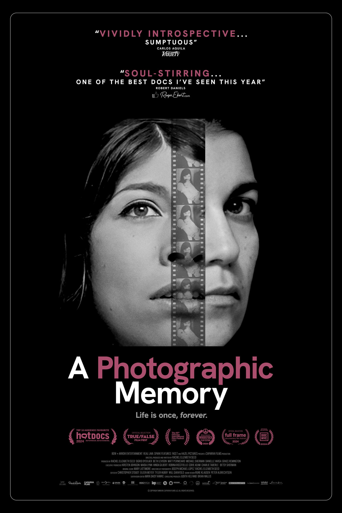

← Collabs
A Photographic Memory
An intimate, genre-bending portrait of the filmmaker’s trailblazing mother, Sheila Turner Seed – a vibrant and pioneering journalist, photographer, and filmmaker, who died suddenly and tragically when Rachel was just 18 months old.
Role
Editor · Co-Writer
“A moving meditation on memory, interpretation, and the nature of photography itself.”
The New York Times Critic’s Pick
Recognition
- Critic’s Pick — The New York Times
- Winner — Truer Than Fiction Award, 2025 Film Independent Spirit Awards
- World Premiere — True/False Film Festival
- 100% on Rotten Tomatoes · 90 on Metacritic
- Streaming on iTunes, Amazon, and Kanopy